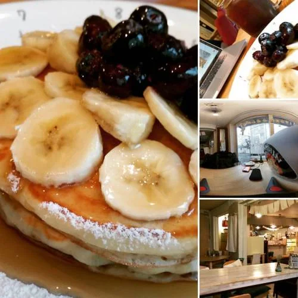
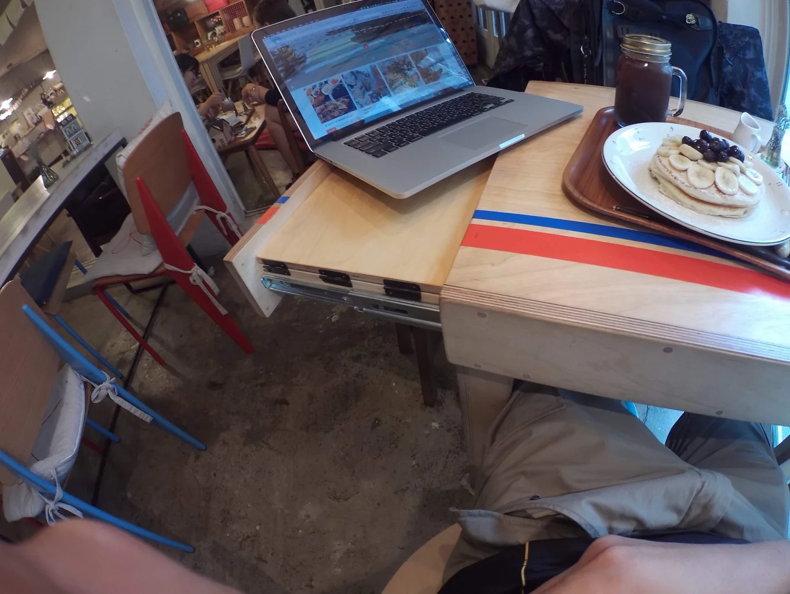
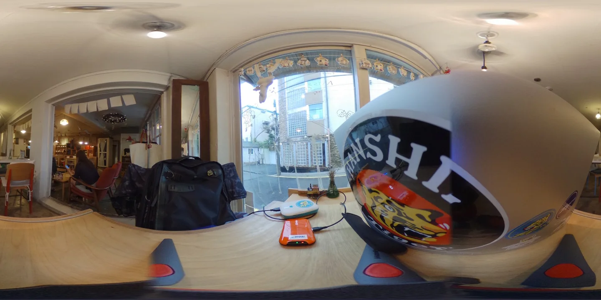
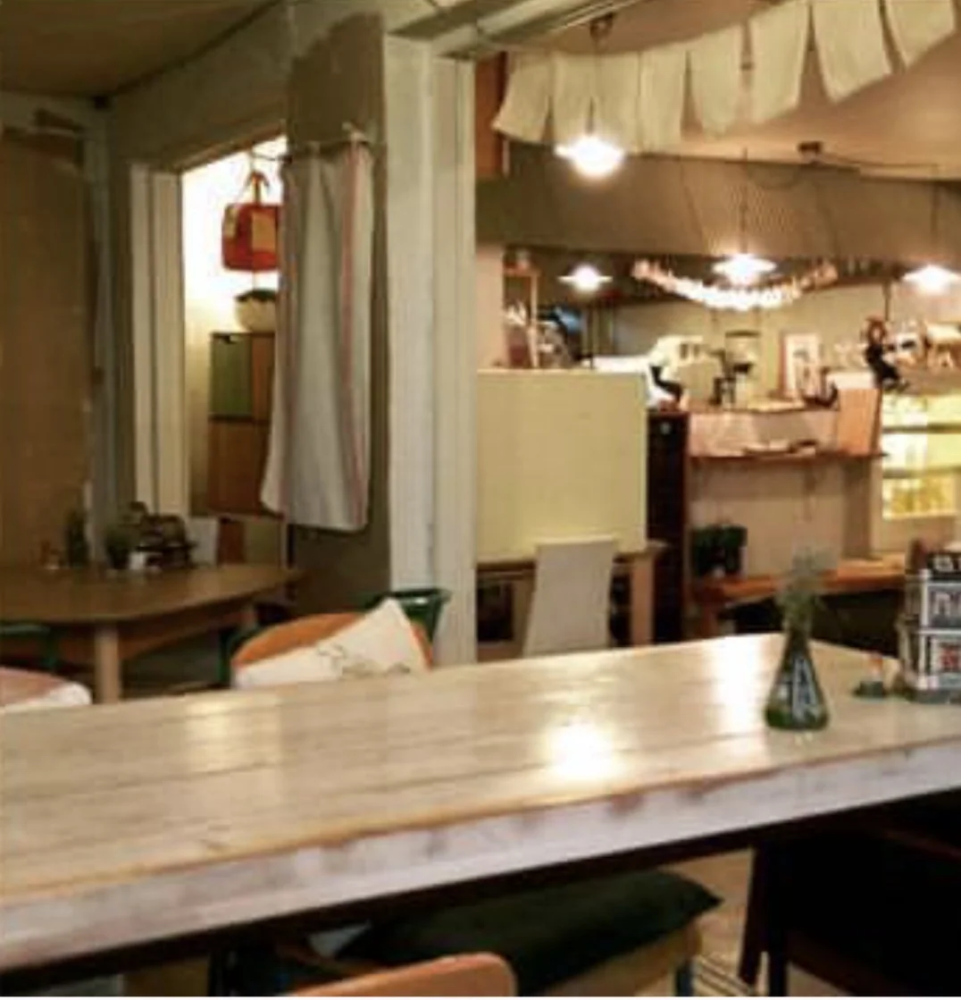
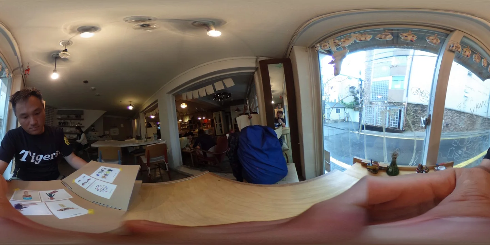
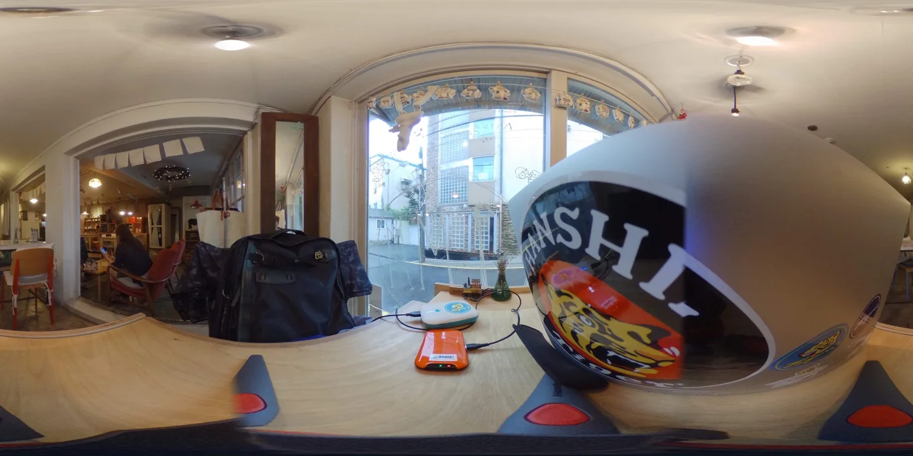
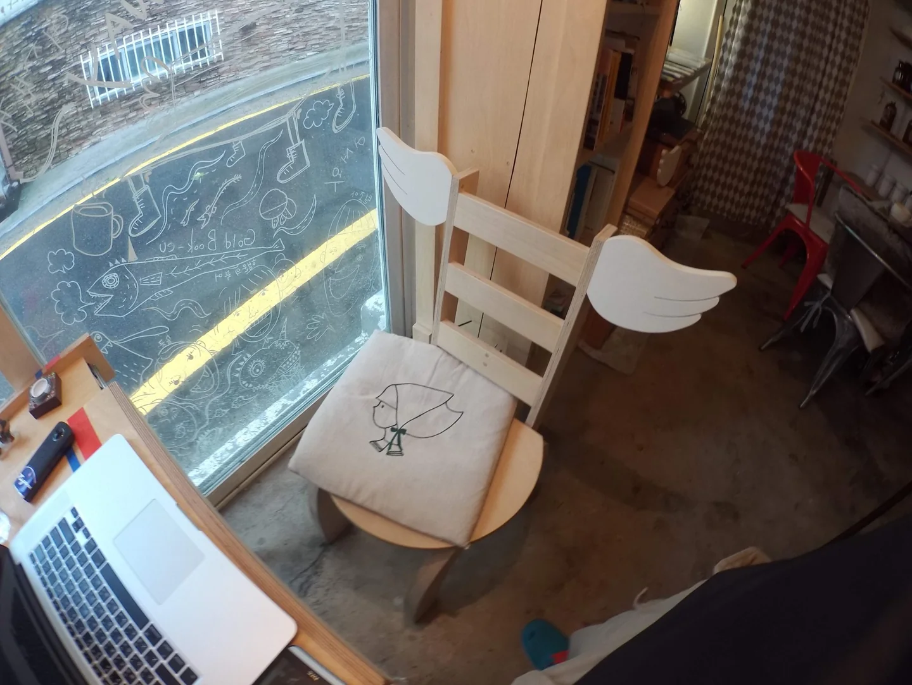

halafish:下大雨的城市 窩進咖啡店裡 撥著整張吳海英 闆娘推薦的鬆餅 算是個好行程 總要找非連鎖店的目標 這次是slow...

下大雨的城市
窩進咖啡店裡
撥著整張吳海英
闆娘推薦的鬆餅
算是個好行程總要找非連鎖店的目標
這次是slowhandstudio!#咖啡街 來著
#付岩洞
#slowhandstudio #coffee（在 Buam-dong, Seoul）
slowhandstudio
今天（2026）整理文章，想再網路搜尋這間家庭式的小咖啡店 已經找不到了


當年那份短暫歇腳的自在跟溫馨 現在好像都變成網美的樣子 少了點隨性 日常感也淡了
在 Buam-dong, Seoul（付岩洞）



